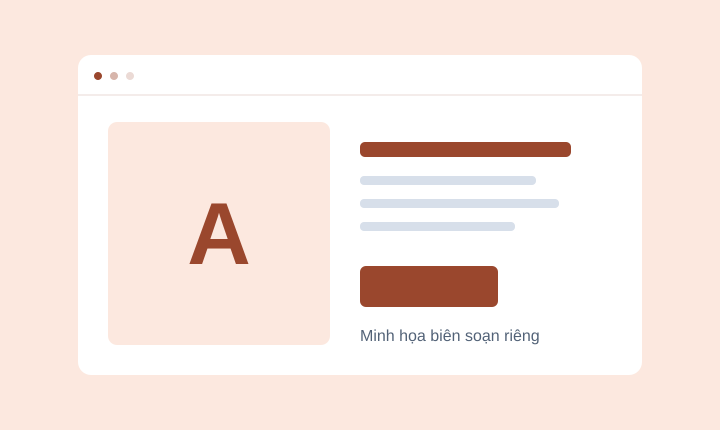
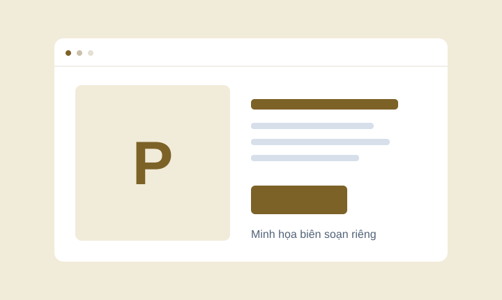

Web Dev for Beginners
Hiểu các phần của một trang web trước khi nhờ AI viết và sửa mã.
Tìm theo loại tài nguyên. Đọc điều kiện trước khi cài hoặc dùng vào dự án.
Hiểu các phần của một trang web trước khi nhờ AI viết và sửa mã.

Xem các ví dụ nhỏ để hiểu cấu trúc, bố cục và cách trình duyệt hiển thị.

Một nguồn tham khảo để rà soát giao diện theo các quy tắc web.

Tham khảo cấu trúc một dự án Astro khi đã sẵn sàng dùng framework.

Tham khảo hướng dẫn tối ưu React khi đã có dự án dùng công nghệ này.

Một tham khảo về CSS tối giản; repo đang có trạng thái archived.
Thử một từ ngắn hơn hoặc xóa bộ lọc. Bạn vẫn có thể đọc bài thực hành đầu tiên.
Xem bài thực hànhBộ lọc đang minh họa trên 6 mục tĩnh. Bạn cần tìm hướng dẫn hoặc sửa lỗi?